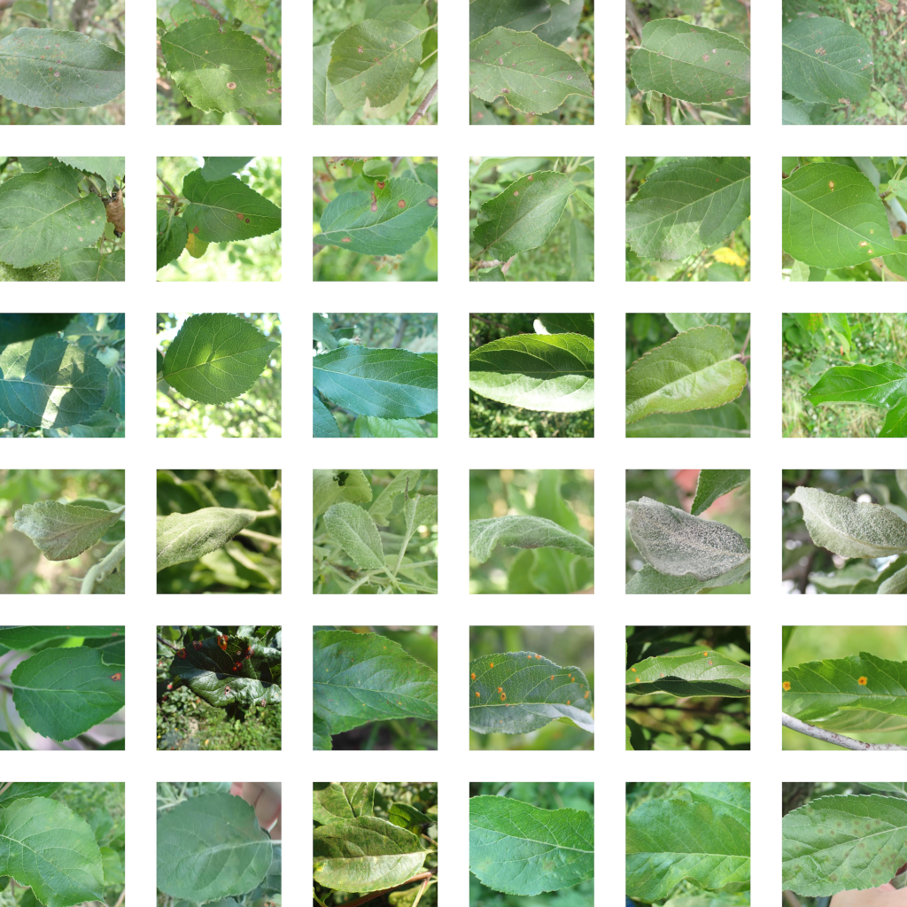
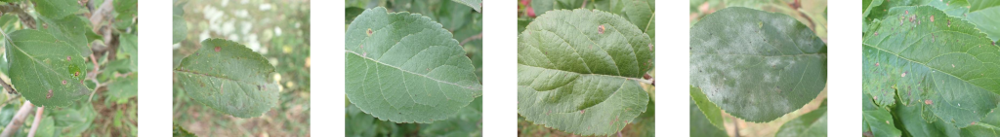
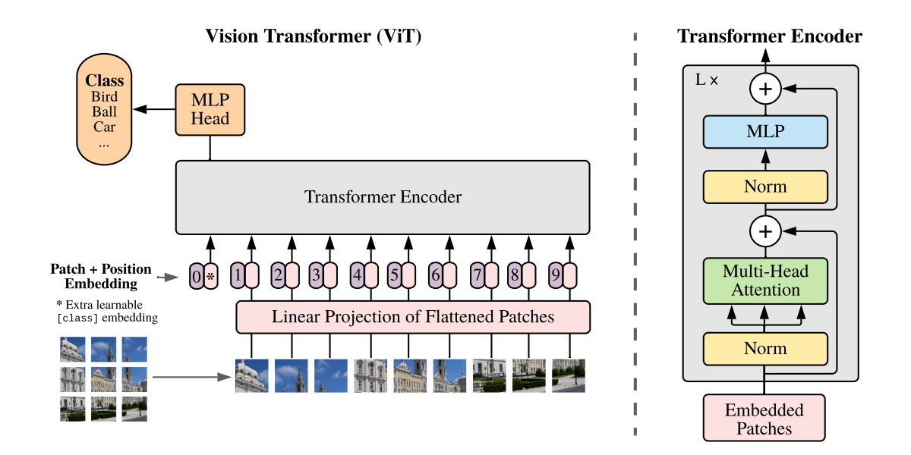
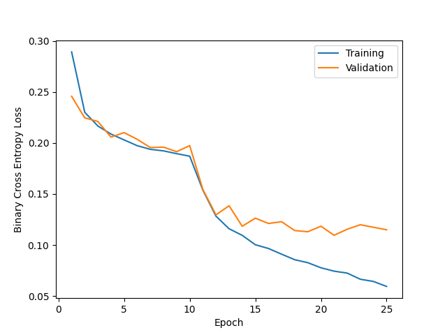
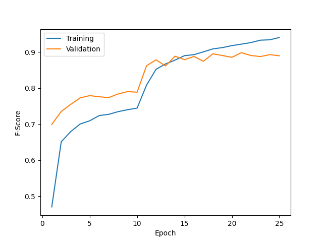

thomasthienbui@gmail.com
| Label | Count |
|---|---|
| Complex | 2151 |
| Frog Eye Leaf Spot | 4352 |
| Healthy | 4624 |
| Powdery Mildew | 1271 |
| Rust | 2077 |
| Scab | 5712 |





| Model | Test Set F-Score |
|---|---|
| Vision Transformer | 80.4 |
| DenseNet169 | 83.3 |
| EfficientNet B6 | 84.8 |